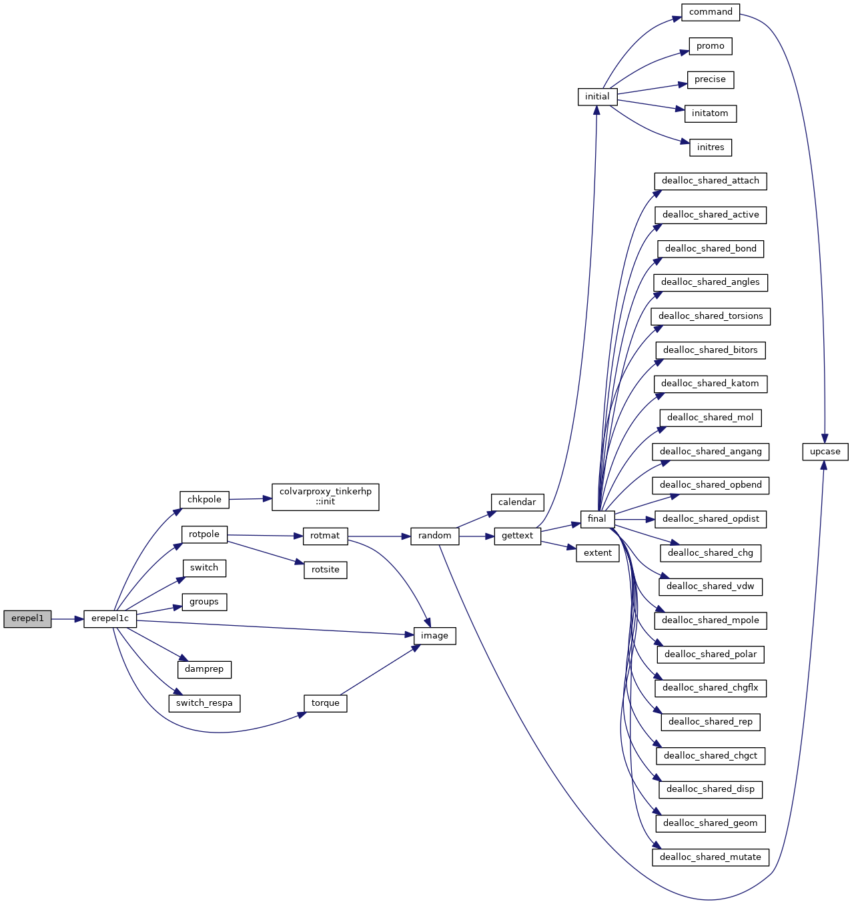
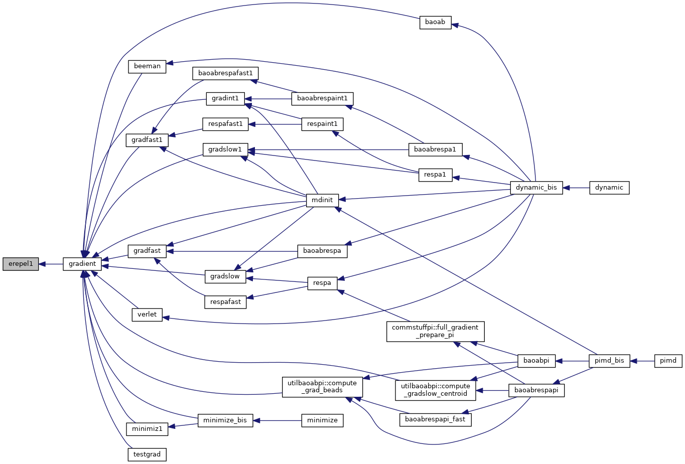
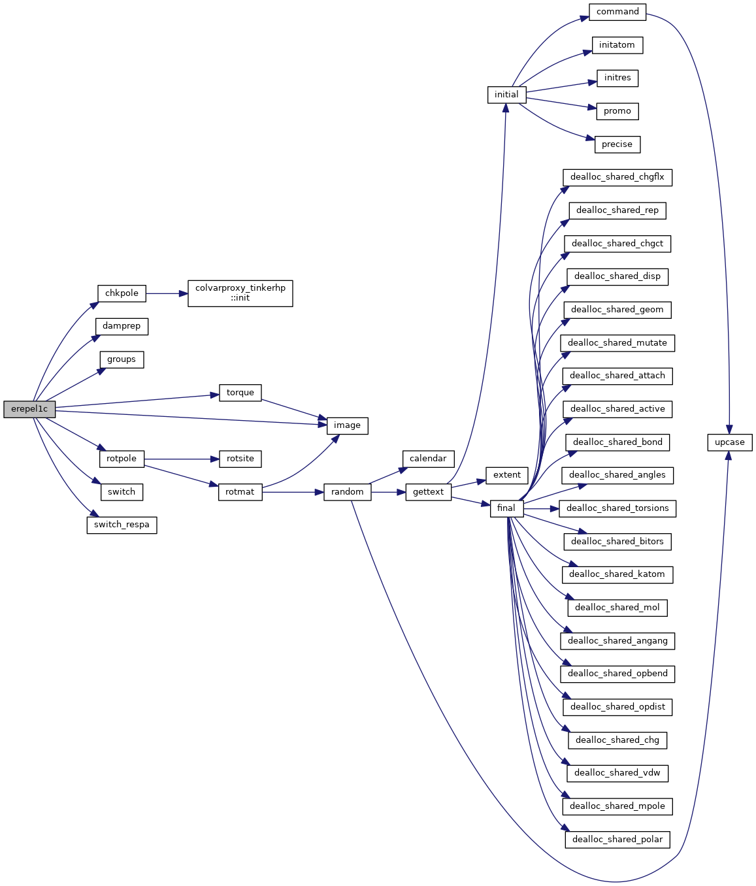
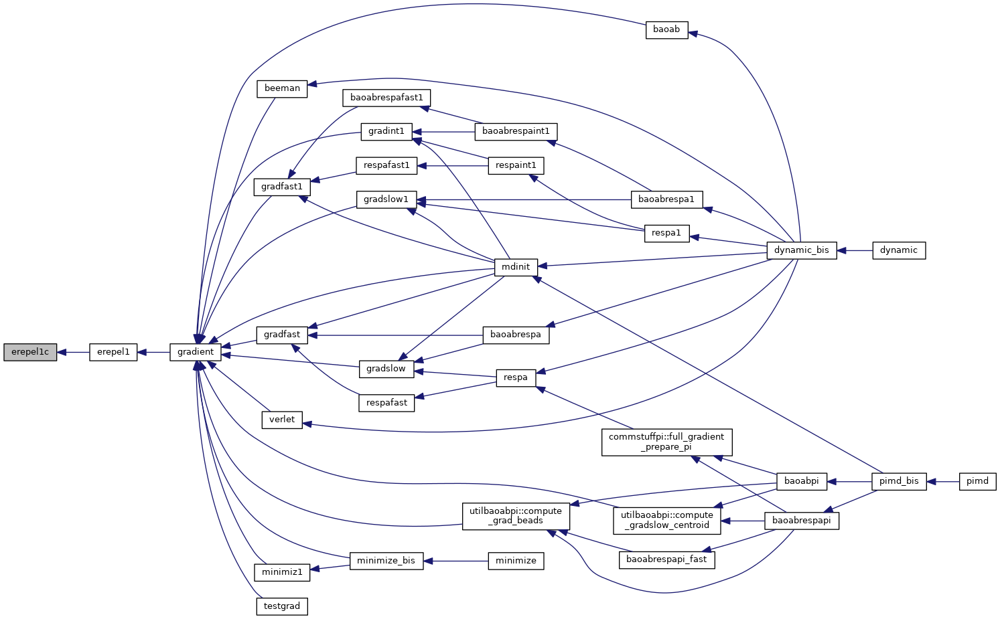

|
Tinker-HP v1.3
|
|
Tinker-HP v1.3
|
Go to the source code of this file.
Functions/Subroutines | |
| subroutine | erepel1 |
| calculates the Pauli repulsion energy and first derivatives More... | |
| subroutine | erepel1c |
| calculates the Pauli repulsion energy and first derivatives More... | |
| subroutine erepel1 | ( | ) |
calculates the Pauli repulsion energy and first derivatives
| no | params |
Definition at line 25 of file erepel1.f90.
References erepel1c().
Referenced by gradient().


| subroutine erepel1c | ( | ) |
calculates the Pauli repulsion energy and first derivatives
| no | params |
Definition at line 54 of file erepel1.f90.
References chkpole(), damprep(), groups(), image(), rotpole(), switch(), switch_respa(), and torque().
Referenced by erepel1().


 1.8.5
1.8.5